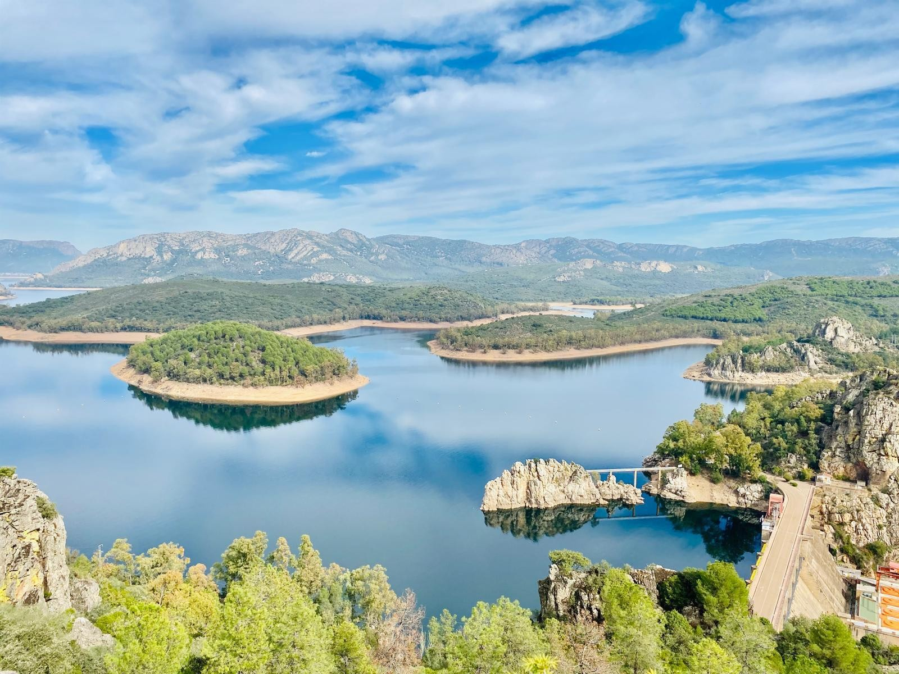
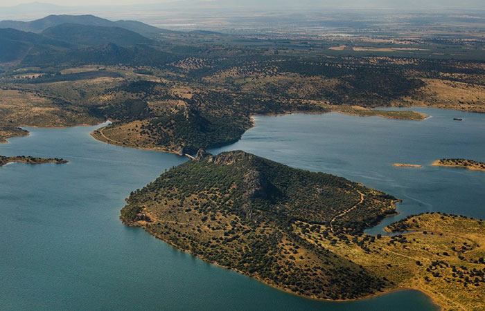
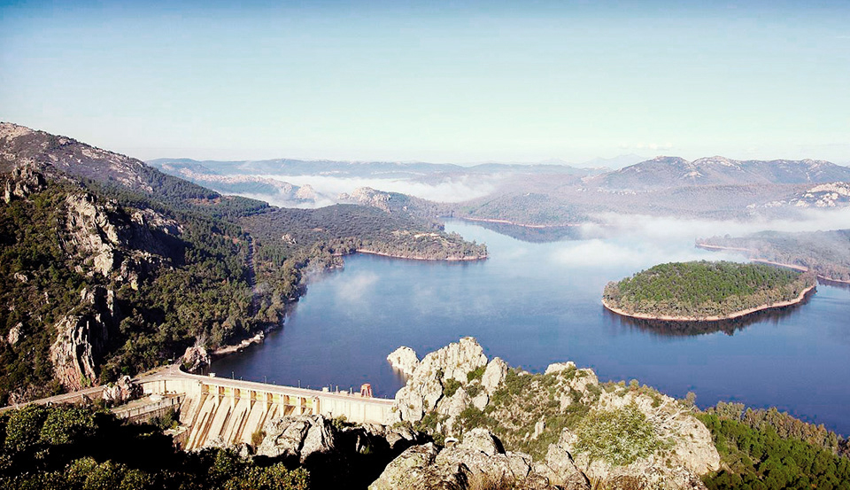
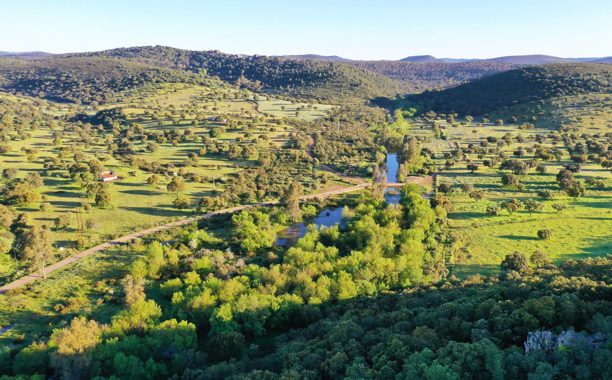

Patrimonio Natural
La Reserva de la Biosfera
Escuchar audioguía
-0:00
Naturaleza, agua y vida en equilibrio
Naturaleza, agua y vida en equilibrio
La Reserva de la Biosfera de La Siberia es uno de los territorios más singulares de España. Situada en el noreste de la provincia de Badajoz, fue reconocida en 2019 por la UNESCO, integrándose en una red mundial de espacios donde la conservación de la naturaleza y la actividad humana conviven en equilibrio.
Reconocimiento internacional
La declaración como Reserva de la Biosfera convierte a La Siberia en un territorio clave a nivel global. No se trata solo de proteger el entorno, sino de fomentar un modelo de desarrollo sostenible que sirva como ejemplo.Un territorio amplio y poco poblado
La Siberia extremeña destaca por su gran extensión y su baja densidad de población:- Más de 155.000 hectáreas
- Algo más de 10.000 habitantes
- Formada por 11 municipios, entre ellos Herrera del Duque Este equilibrio entre espacio y población permite conservar un entorno prácticamente intacto.
El agua: un paisaje inesperado
Uno de los elementos más sorprendentes de La Siberia es su enorme presencia de agua. Este territorio alberga la mayor extensión de costa interior de agua dulce de España, gracias a sus grandes embalses, como Cíjara o García de Sola. El resultado es un paisaje único donde el agua se convierte en protagonista, creando horizontes abiertos y ecosistemas de gran valor.Biodiversidad y ecosistemas
La Reserva de la Biosfera de La Siberia es un auténtico mosaico natural donde conviven distintos ecosistemas:- Bosques mediterráneos
- Dehesas tradicionales
- Sierras y valles
- Zonas fluviales Estos espacios funcionan como corredores ecológicos que favorecen la biodiversidad.
Fauna y flora
La riqueza natural de La Siberia se refleja en su fauna y flora.- Fauna destacada: Ciervos, corzos, jabalíes y gamos; aves protegidas como el águila real, el buitre negro o la cigüeña negra.
- Flora predominante: Encinas y alcornoques, matorral mediterráneo y vegetación de ribera. Este equilibrio convierte la zona en un destino ideal para la observación de fauna y el ecoturismo.
Un cielo único en Europa
La Siberia ha sido reconocida como destino Starlight gracias a la calidad de su cielo nocturno. Más del 80% del territorio tiene cielos sin contaminación lumínica, condiciones excepcionales para la observación de estrellas y el astroturismo.Espacios naturales destacados
Dentro de este territorio destaca la Reserva Regional del Cíjara, con más de 25.000 hectáreas de gran valor ecológico. Este espacio representa uno de los núcleos naturales mejor conservados de Extremadura.¿Qué es una Reserva de la Biosfera?
Una Reserva de la Biosfera no es un parque natural convencional. Se trata de un modelo de gestión que combina tres objetivos fundamentales: conservar el medio natural, impulsar el desarrollo sostenible del territorio y fomentar la educación e investigación. En La Siberia, estos principios se aplican para garantizar el equilibrio entre naturaleza y vida humana.Naturaleza y patrimonio cultural
La Siberia no solo destaca por su entorno natural. También alberga un importante patrimonio histórico y cultural: castillos como el de Herrera del Duque, yacimientos arqueológicos como Lacimurga, pinturas rupestres y tradiciones locales. Este vínculo entre paisaje y cultura forma parte de su identidad.Experiencias turísticas
La Reserva de la Biosfera de La Siberia ofrece múltiples formas de descubrir el territorio: rutas de senderismo, observación de aves y fauna, berrea del ciervo, astroturismo y cicloturismo. Un destino ideal para quienes buscan naturaleza, tranquilidad y autenticidad.Presente y futuro sostenible
La Reserva actúa como motor de desarrollo rural, impulsando el empleo local, los productos tradicionales y el turismo sostenible. Además, se están desarrollando proyectos de crecimiento y ampliación que refuerzan su papel como territorio de referencia.Descubre La Siberia
Visitar la Reserva de la Biosfera de La Siberia es adentrarse en un espacio donde la naturaleza sigue intacta, la historia permanece viva y el equilibrio aún es posible. Un lugar para desconectar y reconectar con lo esencial.Galería de fotos



